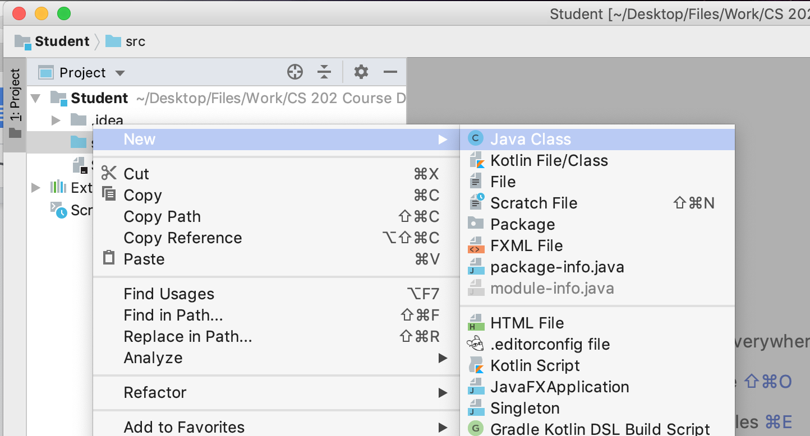
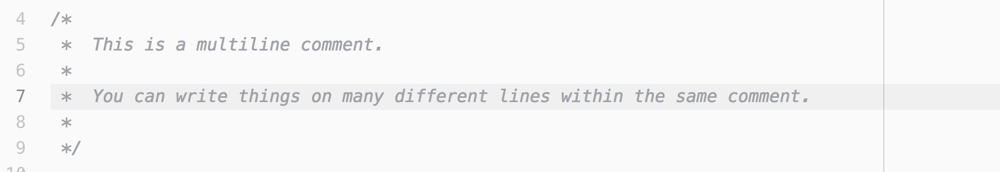
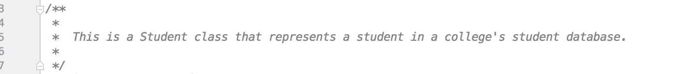
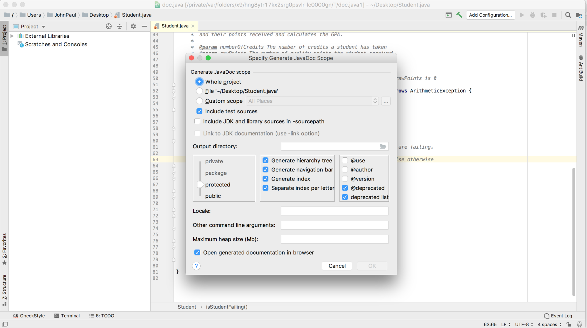

JavaDoc
Overview
When writing code for a large project, you should create documentation on your class so other programmers who are using it can learn what your class does and how to use it. If you are programming in Java, you can use Javadoc to automatically generate documentation for your project. Javadoc comments are written directly in your source files as a special kind of comment. You will learn in this tutorial how to write javadoc comments on a source file and how to generate the accompanying documentation files using a few different tools.
For this tutorial, you are welcome to use any IDE or text editor you would like. The example coding and images in this tutorial come from the Intellij IDEA.



In Java, there are three types of comments: single line comments, multi-line comments, and javadoc comments, as shown below:



As you can see, the javadoc comment is a multi-line comment with an additional star character at the beginning of the comment. Javadoc uses these comments (the Javadoc ones) and the syntax of your class, method and variable documentation to generate documentation from your source code.
Javadoc is commonly used to document three things: classes, methods, and fields. We are going to start with class documentation. Take a look at the following javadoc comment:

Class javadoc comments appear directly above the class declaration. Notice the two words bolded and underlined within the class javadoc comment. These are called tags. A complete list of tags and a description of each of them can be found here. Tags are used to generate the actual documentation files, and also serve to help highlight certain aspects of your code.
In this javadoc comment, we have two tags: an @author tag and a @version tag. These are tags that are often present in the first javadoc comment of a source file, usually the comment for the class declaration. They are fairly self-explanatory: the @author tag defines who created the file, and the @version tag documents the current version of the file. Version numbers would be changed as the file is modified.
Javadoc comments should always begin with a description of the class, followed by all of the standalone tags for that comment (if any). Javadoc is intended to be placed directly before the item it’s documenting; you can put whitespace between the comment and the object (but we usually don’t), but no code should go between the object you are documenting and its accompanying javadoc comment.
Now we will move on to commenting fields. Fields are very simple to comment: generally you will just include a short description, with no tags. You may include tags if appropriate, but generally comments such as the following will suffice for any fields you write:

Finally, we will cover commenting methods. The general syntax is the same, but there are a few interesting tags that only apply to methods:

If you are new to java, you might be wondering what throws and ArithmeticException mean. In java, an exception signals that something unexpected or “bad” occured when the program was running. When the program detects something of this nature, it “throws” an exception. Writers of code that calls methods that throw exceptions can write code to handle (or “catch) the exceptions that may be thrown. ArithmeticException is an instance of Exception, and it just means that it is possible for this method to throw an ArithmeticException when it executes. You can read more about Exceptions here.
The @throws tag is where the programmer can describe the conditions under which calling the method may result in a particular type of exception being thrown.
The @param tag allows the programmer to explain the parameters the method expects and what values are expected. The @return tag gives a short description of the value being returned by the function.
For the @throws and @param tags, the name of the Exception/parameter is specified directly after the tag, followed by a short description. You should always include @param and @return tags on any methods with parameters and return values.
Constructors are a special type of method. Their main purpose is to initialize variables when an object is created. When writing javadoc for a constructor, you can simply write a short description of what the constructor does, as in the following image:

Because constructors are methods, they can take parameters and throw exceptions, so @throws and @param tags are used for constructors that take parameters and/or throw exceptions. Constructors do not have a return value, so @return is not used with constructors.

We have just covered the basics of writing javadoc comments. As you use javadoc in your code, we recommend that you review the different kinds of tags that you can use so you can document everything about your program that would be useful for other developers to know.
Next, you will learn how to generate Javadoc documentation from your comments.
Now that you have learned how to write javadoc comments, we will show you how to generate Javadoc documentation from these comments and the declarations in your source files. First, we’ll show you how to generate Javadoc from the command line. Then we’ll show you how to generate it from the Intellij IDE.

If you are using a different IDE, you can search online for instructions to find the file path on your IDE.
javadoc Student.java -d doc
This will create a directory called doc in your current directory that contains your html Javadoc files.

Now we will show you how to generate generate Javadoc using an IDE. The example will use Intellij IDEA, but the process is very similar in other IDEs as well.

